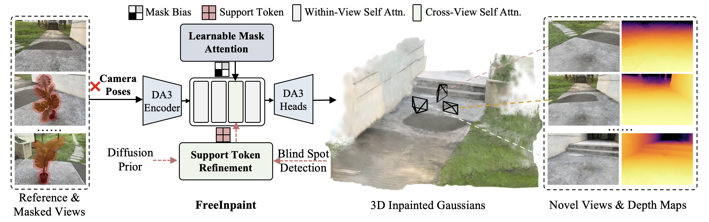
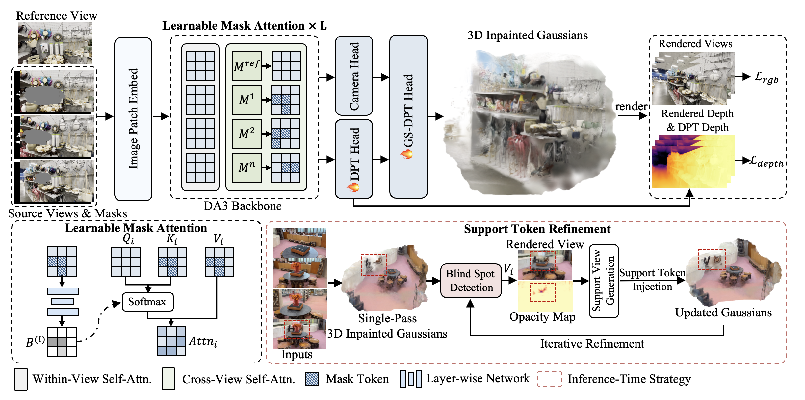

Overview

FreeInpaint takes a single reference image and multiple unposed masked source images as inputs. It jointly estimates the camera parameters and reconstructs a high-fidelity, multi-view consistent 3D Gaussian field.
Method

The Pipeline of FreeInpaint. Our framework adapts DA3 for pose-free 3D inpainting by introducing Learnable Mask Attention, which prevents masked regions from corrupting both pose and geometry estimation. Additionally, we propose an inference-time Support Token Refinement strategy to progressively inpaint content in occluded blind spots lacking visual cues, while fine-tuning the DPT heads to adapt the model for inpainting tasks.
More Results
Object Removal
Qualitative comparison with state-of-the-art 3D inpainting methods. FreeInpaint takes 1 unposed reference image and 3 unposed masked images as input.
Compare InstaInpaint and FreeInpaint using the same inputs and shared camera trajectories. Select a scene, then drag the divider to explore.
Object Replacement
Our FreeInpaint also enables the high-fidelity replacement of specific objects.
BibTeX
@inproceedings{pan2026pose,
title = {Pose-Free Feed-Forward 3D Inpainting via Learnable Mask Attention and Support Token Refinement},
author = {Pan, Jingyi and Xu, Dan and Luo, Qiong},
booktitle = {The Fortieth Annual Conference on Neural Information Processing Systems},
year = {2026}
}